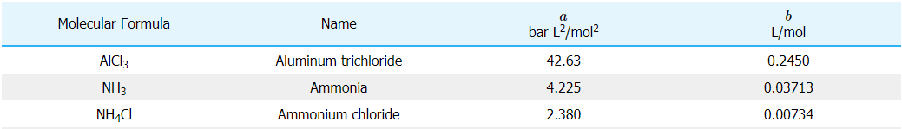

A single component's phases
In general, phase changes are depending on the compination of temperature and pressure
Liq.-gas phase change with two components

Liq.-gas phase change with two components
Calculation boiling pressure
Mole fraction x
Raoult's Law:
\begin{aligned}
p = \sum_i x_i \cdot p_{0i}^{LV}
\end{aligned}
Respecting non-ideality:
\begin{aligned}
p = \sum_i x_i \cdot p_{0i}^{LV} \cdot \gamma_i
\end{aligned}
Activity coefficient
- Factor to describe the effective (mole) fraction
- Not substance-, but mixture-specific
- Hard to calculate
All those models need substance-specific data
Group Contribution Methods
Group Contribution Methods
with LEGO
Imagine we build a bridge
This is what we want
This is what we have
What happened?
We decided based on the available bricks and their combination:
- Forms of bricks
- Connections of bricks
- Fractions of bricks
- Colors of bricks
- Symbols of bricks
What's the message?
- We can roughly say if building a bridge with a given mix of LEGO bricks is feasable and wise or not
- Therefore, we need information about each brick itself as well as about the combination of different bricks
- We predict the result without any further information
Let's do the same with chemistry
Let's do the same with chemistry
The UNIFAC model
- Calc pure component parameters based on functional groups
- Calc component parameters in the mixture based on pure components
- Calc activity coefficients:
- Combinatorial part: From component
- Residual part: From component and interaction
The maths
\begin{aligned}
\ln \Gamma_k^{(i)} = Q_k \cdot \left( 1 - \ln \left( \sum_m \theta_m^{(i)}\Psi_{mk} \right) -
\sum_m \frac{ \theta_m^{(i)} \Psi_{km} }{ \sum_n \theta_n^{(i)} \Psi_{nm} } \right)
\end{aligned}
Nochmal gucken, letzter Buch Indices Zähler/Nenner passt
nicht
Group interaction parameters:
\begin{aligned}
\Psi_{ij} = \exp \left( - \frac{ a_{ij} + b_{ij} T + c_{ij} T^2 }{ T } \right)
\end{aligned}
Nochmal gucken, ob das nicht UNIFAC-DMD ist (Anz. Parameter)
Parameters
Are publicly available
Van der Waals

UNIFAC model